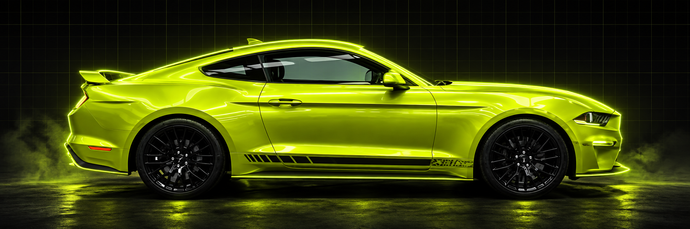
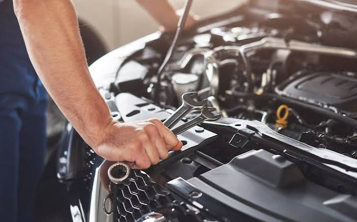
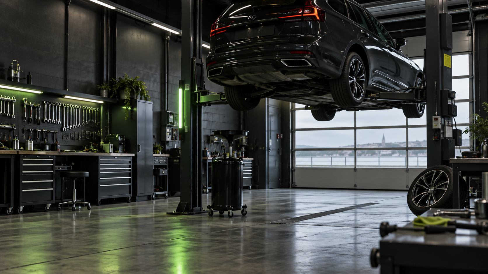

LOKALT VÆRKSTED SIDEN 1982
Din bil.
Vores
ansvar.
BESTIL TID ↗

SERVICE · REPARATION · DIAGNOSE · BILHANDEL · SERVICE · REPARATION · DIAGNOSE · BILHANDEL · SERVICE · REPARATION · DIAGNOSE · BILHANDEL ·
Ikke bare
en reparation.
Hos Nr. Uttrup Auto tager vi os tid til at forklare, hvad bilen har brug for, før arbejdet går i gang.
1982 LOKALT VÆRKSTED
Service &
eftersyn
Gennemgang og service, så bilen er klar til hverdagen.
↗02Reparation &
fejlfinding
Vi finder fejlen og taler løsningen igennem med dig.
↗03Køb & salg
af bil
Tag en snak med os først, når du overvejer bilskifte.
↗03 / DERFOR VÆLGER KUNDER OS01 02 03
Alle bilmærker
Service og reparation med fokus på det, din bil faktisk har brug for.
Klar besked først
Vi gennemgår opgaven sammen, før arbejdet begynder.
Lokalt siden 1982
Et fast værksted i Nørresundby med mange års erfaring.
KLAR BESKED. GODT HÅNDVÆRK.Vi holder
Vi holder
dig kørende.
Uanset bilmærke, alder eller problem starter vi med at forstå bilen og dine behov.
TAL MED VÆRKSTEDET ↗NR. UTTRUP AUTO · SERVICE · REPARATION · DIAGNOSE · BILHANDEL · NR. UTTRUP AUTO · SERVICE · REPARATION · DIAGNOSE · BILHANDEL ·

ET VÆRKSTED DER FØLES TRYGTHer bliver din
Her bliver din
bil taget alvorligt.
VÆRKSTEDSNYT / TIPSGodt at vide
Godt at vide
om din bil.
Små råd fra værkstedet, som kan hjælpe dig med at holde bilen klar til hverdagen.
VEDLIGEHOLDELSE
Hvornår skal bilen have service?
Regelmæssigt eftersyn kan finde små problemer, før de udvikler sig.
BESTIL TID ↗SÆSONTJEK
Er bilen klar til næste sæson?
Dæk, bremser og væsker er gode steder at starte et tjek.
FÅ ET TJEK ↗VÆRKSTEDSBESØG
Sådan forbereder du dit besøg
Fortæl os kort om lyde, lamper eller andre tegn, du har lagt mærke til.
KONTAKT OS ↗04 / BESTIL TIDKlar til
Klar til
at booke?
Udfyld felterne, så vender værkstedet tilbage.